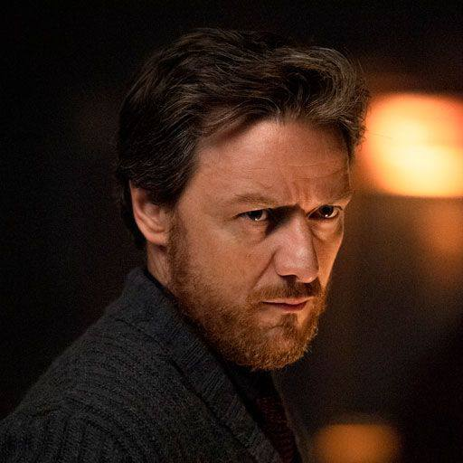

Сальвіан Корвус

༺࿅ིཽ༼⛩ПІБ: Сальвіан Корвус
༺࿅ིཽ༼⛩Вік/Дата народження: 04/04, 45 років
༺࿅ིཽ༼⛩Ріст/Вага: 1,7м, 70 кг
༺࿅ིཽ༼⛩Характер: відлюдькуватий, дивакуватий науковець, у якого в пріоритеті - книги та дослідження. Тихий, замкнений, з деяким відчуттям ностальгії за зниклими культурами. Він схильний до сумнівів і занурений у власні дослідження, але здатний до глибокого співчуття, коли мова йде про збереження спадщини
༺࿅ིཽ༼⛩Біографія: походить з родини учених і істориків, яка займалася дослідженням стародавніх цивілізацій, що вже давно зникли. З дитинства він був навчений, що знання — це найбільша сила, і що, навіть якщо богів уже немає, світ може бути збережений через правильне використання артефактів і магії.
З часом Сальвіан став відомим своїми дослідженнями та винаходами. Його розробці належать самозакривні шлюзи та певні механізми безпеки, гідравлічні підйомники та ліфти, архіватори та кодові пристрої. Прототипи та ідеї він черпав з катакомб та старих домагічних руїн. Він вивчав побут та життя стародавніх культур, шукав механізми, що залишилися після падіння цивілізацій, і знаходив способи використати ці знання для сучасних цілей.
༺࿅ིཽ༼⛩Магічні здібності: магією не володіє, проте розум - його сила. Він знається на мовах та діалектах, особливо пишається своєю власною розробкою - перекладом рун у катакомбах.
༺࿅ིཽ༼⛩Наслідки знищення артефакту: рання стадія деменції. Він почав періодично забувати те, що робив хвилину тому. Іноді забуває про свої наукові роботи. Ці знання повертаються з часом великим потоком, що спричиняє мігрені.
༺࿅ིཽ༼⛩Розвиток персонажа: він планує перенести всі свої знання на папір та встигнути дослідити якомога більше секретів забутих цивілізацій, поки остаточно не втратить пам'ять та себе.
༺࿅ིཽ༼⛩Божество покровитель: відсутній. Він проникся культурою "домагічних відступників", що сам перестав вірити у богів. Він вірить у науку і технічний прогрес.
༺࿅ིཽ༼⛩Сім'я: батьки померли від старості, братів/сестер не має. Через любов та відданість своїй роботі іншої родини не завів.
༺࿅ིཽ༼⛩Додатково: у нього зіпсований зір через багато років, що він присвятив дослідженням підземних катакомб. Зазвичай носить окуляри, іноді п'є зілля, що дозволяє йому краще бачити і без окулярів.
༺࿅
༼⛩Зовнішність: Його вигляд не привертає уваги, але вираз обличчя завжди спокійний, навіть коли він спостерігає за хаосом навколо
Прототип у реальності: James Andrew McAvoy